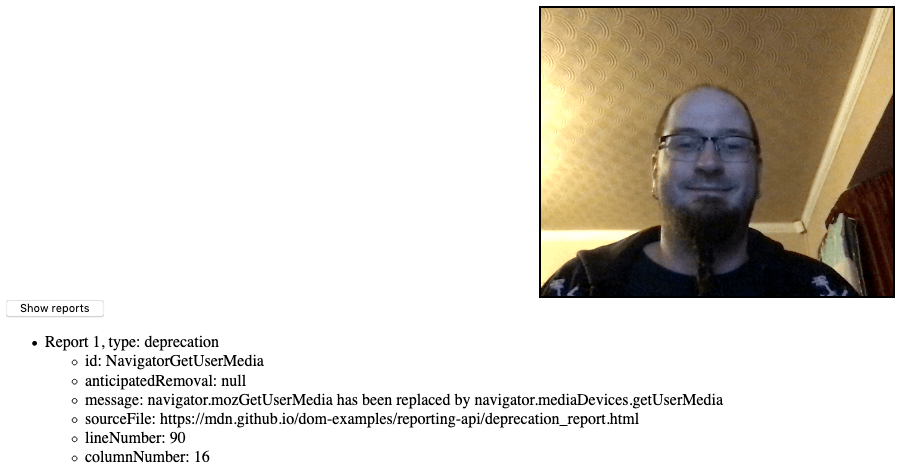

The ReportingObserver interface of the Reporting API allows you to collect and access reports.
ReportingObserver object instance, which can be used to collect and access reports.This interface has no properties defined on it.
This interface has no events that fire on it.
In our deprecation_report.html example, we create a simple reporting observer to observe usage of deprecated features on our web page:
let options = {
types: ['deprecation'],
buffered: true
}
let observer = new ReportingObserver(function(reports, observer) {
reportBtn.onclick = () => displayReports(reports);
}, options);
We then tell it to start observing reports using {{domxref("ReportingObserver.observe()")}}; this tells the observer to start collecting reports in its report queue, and runs the callback function specified inside the constructor:
observer.observe();
Later on in the example we deliberately use the deprecated version of {{domxref("MediaDevices.getUserMedia()")}}:
if(navigator.mozGetUserMedia) {
navigator.mozGetUserMedia(
constraints,
success,
failure);
} else {
navigator.getUserMedia(
constraints,
success,
failure);
}
This causes a deprecation report to be generated; because of the event handler we set up inside the ReportingObserver() constructor, we can now click the button to display the report details.

Note: If you look at the complete source code, you'll notice that we actually call the deprecated getUserMedia() method twice. After the first time we call {{domxref("ReportingObserver.takeRecords()")}}, which returns the first generated report and empties the queue. Because of this, when the button is pressed only the second report is listed.
| Specification | Status | Comment |
|---|---|---|
| {{SpecName("Reporting API","#interface-reporting-observer","ReportingObserver")}} | {{Spec2("Reporting API")}} | Initial definition. |
{{Compat("api.ReportingObserver")}}